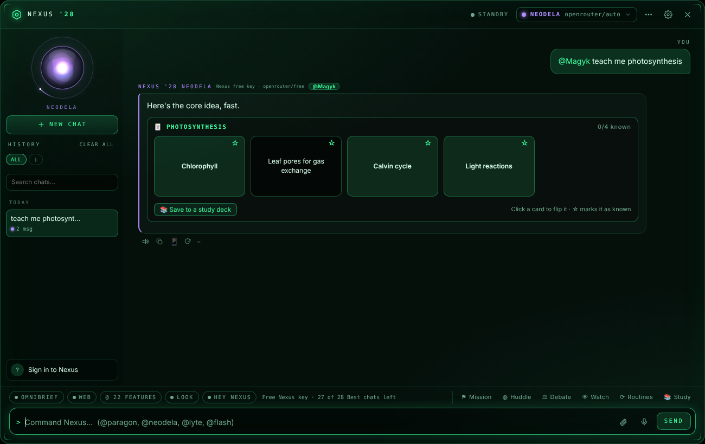
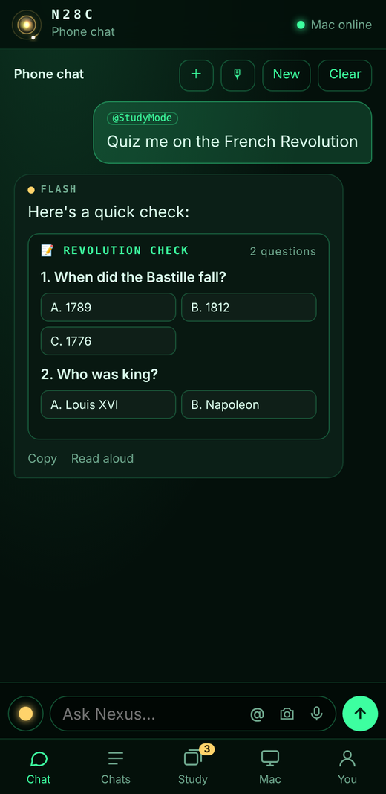
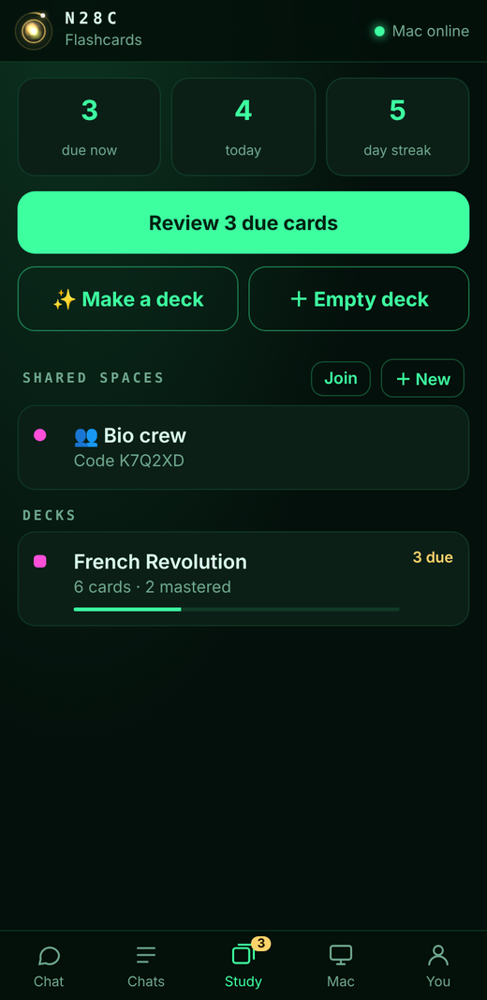

Nexus '28 lives in your menu bar. @mention an agent, talk to it, show it your screen, or hand it a mission and get back to work. Then pick it up on your phone with N28C.
Every agent has its own strengths and dozens of @features. Here's what you can do the minute you install it.
Flash for speed, Lyte for clarity, Neodela for depth, Paragon for doing. Mix them in one message, or let the right one answer.
Give Paragon a goal ("compare 5 laptops under $800") and a time limit. It researches in the background and hands you a report you can share as PDF or Word.
Ask several agents at once and get one summary, or make two of them argue a topic while a third judges.
Press a hotkey or say "Hey Nexus". The orb listens, thinks and talks back, in a Siri voice, ElevenLabs or OpenAI.
"What's this error?" Nexus looks at the window you're in. Or have it watch a window and tell you when the download finishes.
Weather, your calendar and what matters today, every morning. Plus routines you write in plain English: "every Friday, sum up my week".
Hints first, one at a time, then the answer, then a check. Snap a photo of the problem from your phone.
MLA, APA or Chicago from any link or the page open in your browser, saved per project with a bibliography ready to paste.
Chats, keys and stats stay on your Mac. Cloud sync is only for the things you turn on, under your own account.
Make a deck about anything in one line, review on a spaced-repetition schedule, and study with friends.



N28C is Nexus on your iPhone or Android, no App Store needed. Your Mac does the thinking; your phone gets the answers.
Nexus '28 is free. It comes with a free Nexus key so you can start chatting right away, and you can add your own OpenAI, Anthropic, Gemini or OpenRouter keys (or a local model) any time.
Get the latest version for Apple silicon Macs.
Open the DMG and drag Nexus '28 to Applications. It isn't from the App Store yet, so run this once in Terminal:
xattr -cr "/Applications/Nexus '28.app"Nexus appears in your menu bar. Press ⌘⇧N to open it, or turn on "Hey Nexus". Then scan the QR code in Settings → Phone to set up N28C.
Yes. The free Nexus key gives you a number of chats on each agent. Bring your own API key or run a local model for unlimited use, or redeem an aARgon3 / Mexel order to unlock agents.
Macs with Apple silicon (M1 or newer) on macOS 13 Ventura or later. Some extras, like on-device speech and Apple's on-device models, need newer macOS versions.
They're saved on your Mac. If you sign in to a Nexus account, only what you turn on syncs (like N28C or Shared Spaces), and only you can see it. Messages go to the AI provider you chose to get an answer.
Open Settings → Phone in Nexus '28, turn it on, and scan the QR code. On iPhone, tap Share → Add to Home Screen to get the app icon and notifications.
Yes! In Settings → Account, tap "Sign up to be a beta tester". Beta testers get new features and updates first.
Settings → General → Send feedback, or open an issue on GitHub.